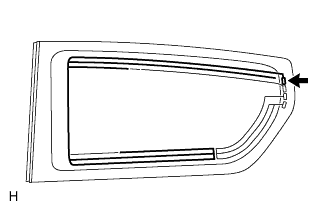
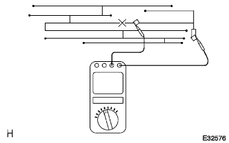

Audio system radio cannot be received (poor reception status) |
| Step 1 | Vehicle movement inspection |
Vehicle movement
Move the vehicle to a place where radio broadcasting can be received and check if the function returns to normal.
|
| ||||
| NG | |
| Step 2 | Post -installation parts inspection (sunshade film, telephone antenna, etc.) |
Resistant parts inspection
Inspect whether the retrofitting parts such as sunshade film and telephone antenna are installed.
|
| ||||
| OK | |
| Step 3 | Antenna noise generation inspection |
|  |
Antenna noise generation inspection
In the IG Switch ACC, turn on the radio and make it AM mode.
When the driver is contacted with the antenna terminal exposure unit of Quotow Indows Assem, it is inspected that noise is generated from the speaker.
|
| ||||
| OK | |
| Step 4 | Windprint type antenna disconnection inspection |
 |
Windprint type antenna disconnection inspection
|  |
Use a SST (Toyota Electrical Tester) to apply a tester stick to the printed antenna to check if there is a place where conduction is gone.
|
| ||||
| OK | ||
| ||
| Step 5 | Radio receiver ASSY inspection |
 |
Preparation before inspection
Radio receiver ASSY can be removed.
Cut the antenna plug.
Noise generating inspection
Radio receiver ASSY connector is connected and the IG switch is ACC.
Turn on the radio and make it AM mode.
Inspect that the speaker generates noise from the speaker when metal such as a thin -blade flashed flash or thin wire is contacted to the antenna jack part of the radio receiver ASSY.
Voltage inspection
 |
Use a SST (Toyota Electrical Tester) to check the voltage between the back of the connector from the back of the connector while the connector of the vehicle wire harness is connected.
| Tester connection | Measurement conditions | Reference value |
|---|---|---|
| Ant (a8) ← → E (E7) | Radio (AM/FM) receiving | 10-14V |
|
| ||||
| OK | |
| Step 6 | Antenna code No.2 inspection |
Preparation before inspection
Ensure the connection between the amplifier antenna assinged and the antenna code No.2.
Release the connector of the connection between the amprifire antenna assing and the antenna code No.2.
Noise generating inspection
Radio receiver ASSY connector is connected to the IG switch to ACC.
Turn on the radio and make it AM mode.
When a metal such as a thin -blade flashed screwdriver or a thin wire is contacted to the antenna jack part of the antenna code, it is inspected that noise is generated from the speaker.
 |
Voltage inspection
Use SST (Toyota Electrical Tester) to check the voltage between the antenna code No.2 connector from the back side of the antenna code No.2 connector.
| Tester connection | Measurement conditions | Reference value |
|---|---|---|
| ANT (1) ← → Body Earth | Radio (AM/FM) receiving | 10-14V |
|
| ||||
| NG | |
| Step 7 | Antenna code SUB-ASSY inspection |
Preparation before inspection
Make the connection between the antenna code No.2 and the antenna code can be seen.
Cut the connection between the antenna code No.2 and the antenna code.
Noise generating inspection
With the connector of the radio receiver Assema Assembly connected, the IG switch is ACC.
Turn on the radio and make it AM mode.
Inspect that a noise occurs from the speaker when a thin -blade flashed flashed screwdriver or a thin wire is contacted in the antenna jack part of the antenna code.
Voltage inspection
Use SST (Toyota Electrical Tester) to check the voltage between the antenna cord connector from the back of the antenna cord connector ← → body ground.
| Tester connection | Measurement conditions | Reference value |
|---|---|---|
| ANT (1) ← → Body Earth | Legio (AM/FM) receiving | 10-14V |
|
| ||||
| NG | ||
| ||